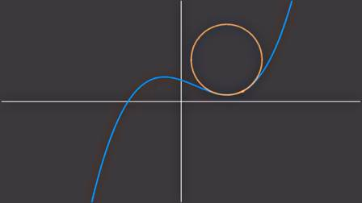
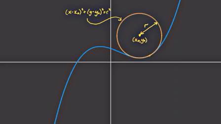

Eğrilik (Curvature)
Bir eğrimiz var, bu eğriye herhangi bir noktada ona en iyi uyan, onun eğimini en iyi gösteren bir çemberi nasıl buluruz? Alttaki gibi bir uyumdan bahsediyoruz,

Bu yazıda bu ideal çemberin yarıçapını bulmayı göreceğiz, elde edilecek formül eğrinin o noktadaki türevleri üzerinden yapılacak.
Çemberin bir $x_0,y_0$ merkezli olduğunu düşünelim, ve yarıçapı $r$ olsun. Bu çemberin formülü şekildeki gibi olur,

Şimdi cebirsel numaralara gelelim. Çember
$$ (x-x_0)^2 + (y-y_0)^2 = r^2 $$
formülünün $x$'e göre türevini alalım. Karedeki 2 aşağı iner, ve parantez içinin türevi alınır,
$$ 2 (x-x_0) [1] + 2(y-y_0) \frac{\mathrm{d} y}{\mathrm{d} x} = 0 $$
$$ (x-x_0) + (y-y_0) \frac{\mathrm{d} y}{\mathrm{d} x} = 0 $$
Şimdi üstteki formülün bir kez daha türevini alalım,
$$ 1 + (y-y_0) \frac{\mathrm{d}^2y}{\mathrm{d} x^2} + \left( \frac{\mathrm{d} y}{\mathrm{d} x} \right) \frac{\mathrm{d} y}{\mathrm{d} x} = 0 $$
$$ 1 + (y-y_0) \frac{\mathrm{d}^2y}{\mathrm{d} x^2} + \left( \frac{\mathrm{d} y}{\mathrm{d} x} \right)^2 = 0 $$
Böylece çember formülünden başlayarak üç tane formül elde etmiş olduk.
$$ (x-x_0)^2 + (y-y_0)^2 = r^2 \qquad (1) $$
$$ (x-x_0) + (y-y_0) \frac{\mathrm{d} y}{\mathrm{d} x} = 0 \qquad (2) $$
$$ 1 + (y-y_0) \frac{\mathrm{d}^2y}{\mathrm{d} x^2} + \left( \frac{\mathrm{d} y}{\mathrm{d} x} \right)^2 = 0 \qquad (3) $$
(3) formülünü $y-y_0$ solda olacak şekilde tekrar düzenleyelim,
$$ y-y_0 = - \frac{1 + \left( \frac{\mathrm{d} y}{\mathrm{d} x} \right)^2}{\frac{\mathrm{d}^2y}{\mathrm{d} x^2}} $$
Benzer bir işlemi (2) üzerinde $x-x_0$ için yapalım,
$$ x-x_0 = -(y-y_0)\frac{\mathrm{d} y}{\mathrm{d} x} $$
Üstteki formülde $y-y_0$ ifadesi var, onu iki üstteki formülde bulmuştuk, oraya sokalım,
$$ = \frac{1 + \left( \frac{\mathrm{d} y}{\mathrm{d} x} \right)^2}{\frac{\mathrm{d}^2y}{\mathrm{d} x^2}} \frac{\mathrm{d} y}{\mathrm{d} x} $$
Böylece hem $x-x_0$ hem de $y-y_0$ için bir formül elde etmiş olduk.
Bu formülleri cember formülü $r$ içine koyalım,
$$ \left[ \frac{1 + \left( \frac{\mathrm{d} y}{\mathrm{d} x} \right)^2} {\frac{\mathrm{d}^2y}{\mathrm{d} x^2}} \frac{\mathrm{d} y}{\mathrm{d} x} \right]^2 + \left[ - \frac{1 + \left( \frac{\mathrm{d} y}{\mathrm{d} x} \right)^2} {\frac{\mathrm{d}^2y}{\mathrm{d} x^2}} \right] = r^2 $$
Ortak ifadeyi dışarı çekersek,
$$ \left[ \dfrac{1 + \left( \dfrac{\mathrm{d} y}{\mathrm{d} x} \right)^2} {\dfrac{\mathrm{d}^2y}{\mathrm{d} x^2}} \right]^2 \left( \left(\dfrac{\mathrm{d} y}{\mathrm{d} x} \right)^2 + 1 \right) = r^2 $$
$$ \frac{\left( 1 + \left( \dfrac{\mathrm{d} y}{\mathrm{d} x} \right)^2 \right)^3} { \left( \dfrac{\mathrm{d}^2y}{\mathrm{d} x^2} \right)^2 } = r^2 $$
Karekök alırsak,
$$ r = \frac{\left( 1 + \left( \dfrac{\mathrm{d} y}{\mathrm{d} x} \right)^2 \right)^{3/2}} { \dfrac{\mathrm{d}^2y}{\mathrm{d} x^2} } $$
Böylece sonuca erişmiş olduk. Çemberin türevlerini kullanarak o çemberin yarıçapını formülize eden bir ifadeye eriştik.
[devam edecek]
Kaynaklar
[1] Radius of Curvature Proof - approximating a curve with a circle!, https://www.youtube.com/watch?v=ZCJfq77sFE8
Yukarı